Round-1 → round-2 delta (what changed)
- B-D1 — the arithmetic-error row now renders the Arithmetic chip (was falling to Ready).
- B-D2 — duplicate pair flags Duplicate at Review + is excluded from the commit by default (no surprise failure at import); prior-reference caption added.
- B-D3 — the CTA states what lands:
Import {n} rows(the includable set), never "Import Anyway". - B-D4 — the lodged-period copy is swept off the em dash.
- Check-B5 — Ready is a muted outline chip; flagged states stay filled.
- Check-B6 — non-food rows read "Not food" (was a bare N/A). The column is kept (it drives the food-VAT split).
- Polish-B7 — the VAT-treatment caption drops the duplicated rate.
- Slice D §6 — the receipt now renders on every completed commit, clean OR partial, with a four-count row (Imported / Held / Excluded / Failed).
- FF-A1 — the QuickBooks helper is restored to Cass's ruled verbatim ("a mapping you confirm").
Slice A — Source cards (#3974, PASS + FF-A1)
Six source cards. Verify the Bank card gated ("Available after beta", dashed, block icon — the #3983 descope) and, on A3, the restored QuickBooks helper ("QuickBooks tax codes map to the four VAT categories through a mapping you confirm").
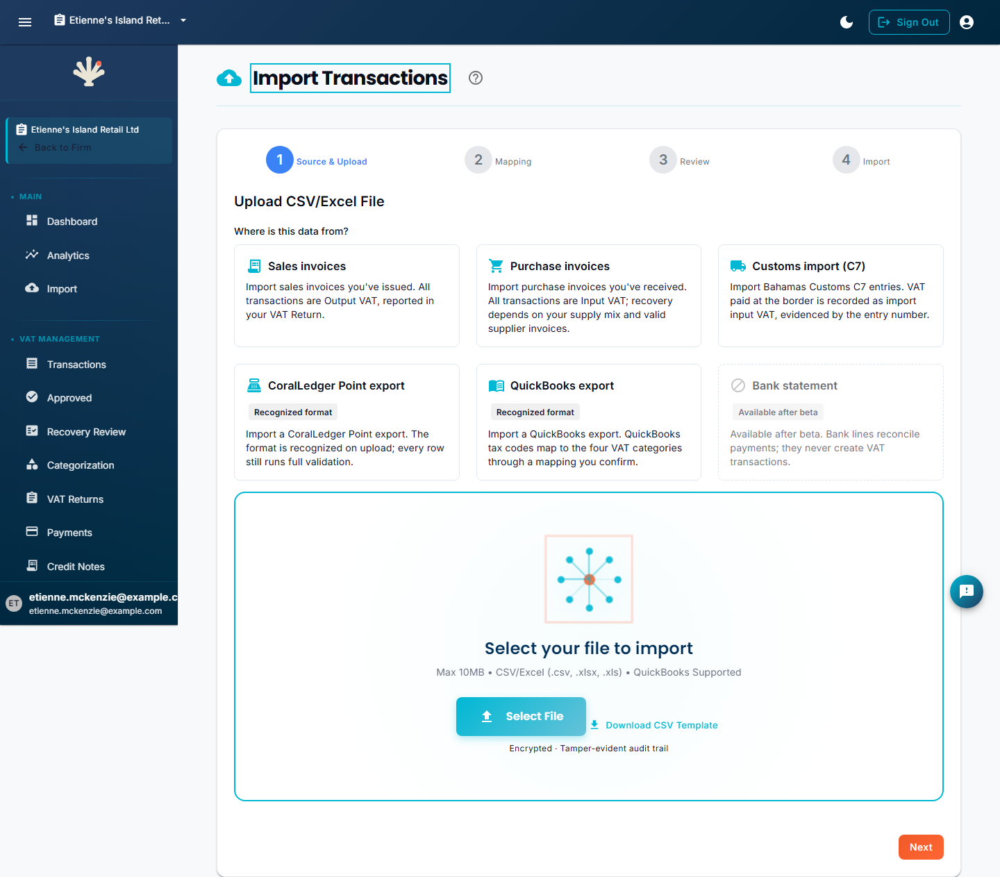
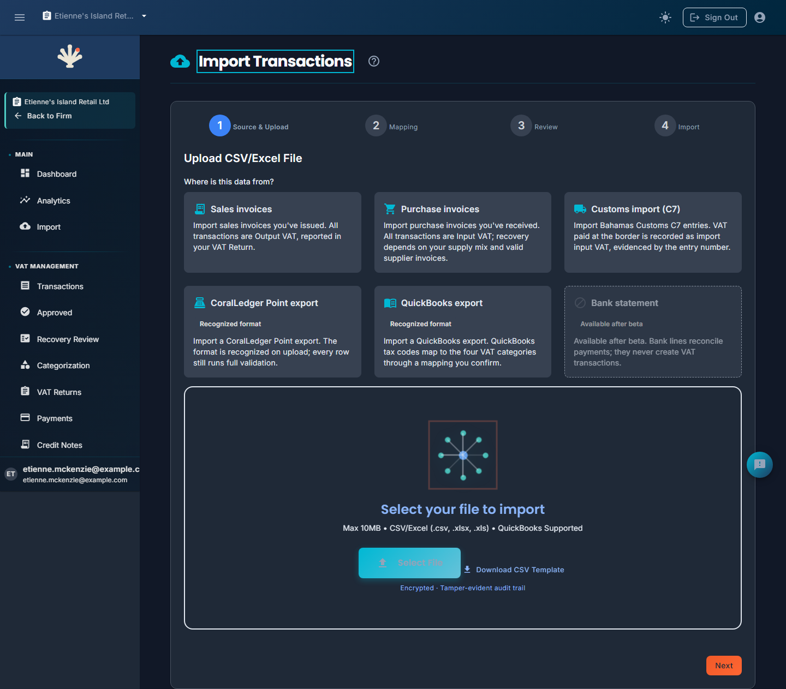
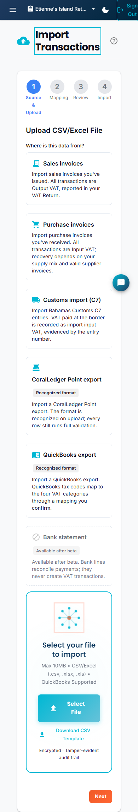
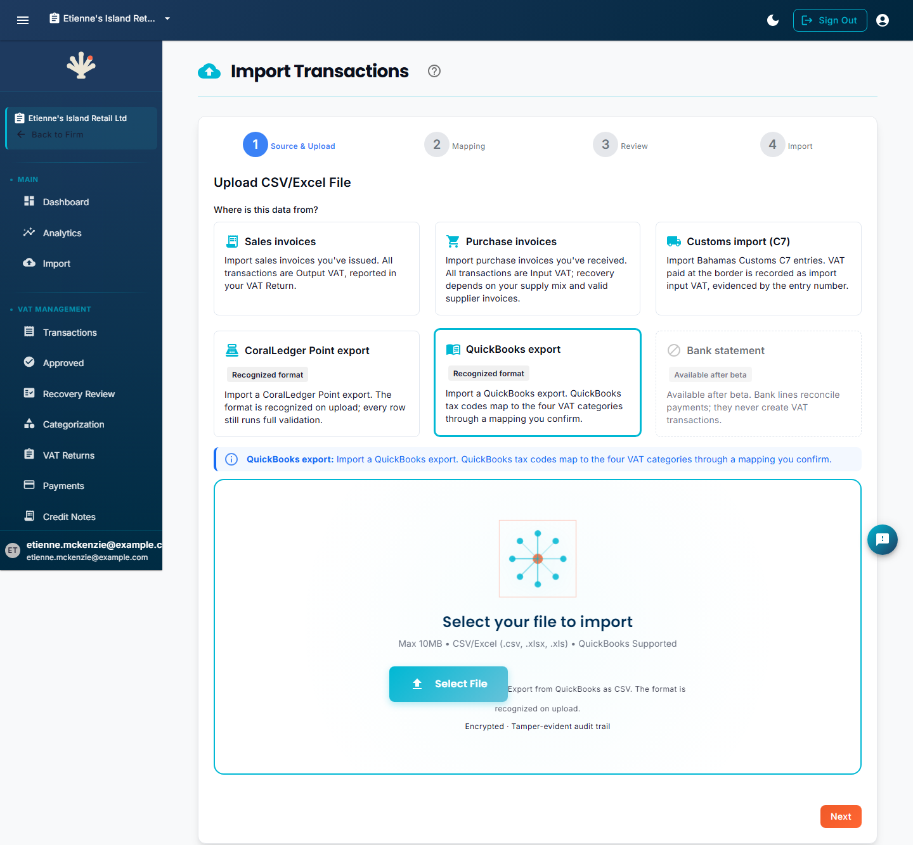
Slice B — Review "weather report" (#3975, was NOT PASSED)
All six row-states now render one-per-row: Row 1 Ready (outline+check) · Row 2 Unclassified · Row 3 Arithmetic · Row 4 Ready (kept dup) · Row 5 Duplicate (excluded caption) · Row 6 Rate-date · Row 7 Lodged period. Summary strip 2·3·2, CTA "Import 5 rows", "Not food", "Standard-Rated" (no duplicated rate).
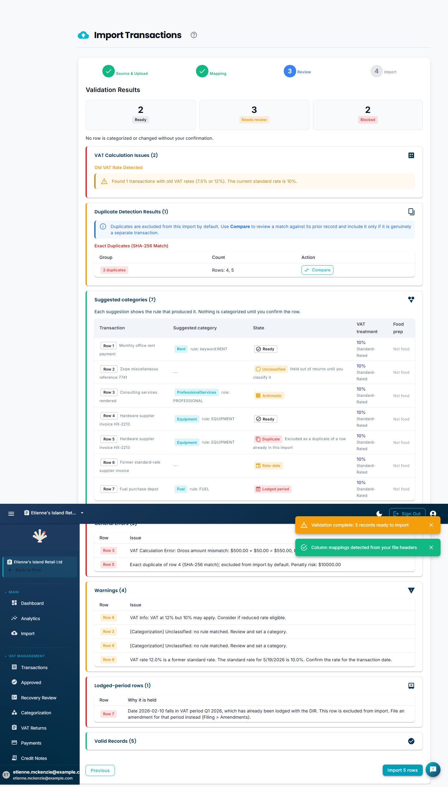
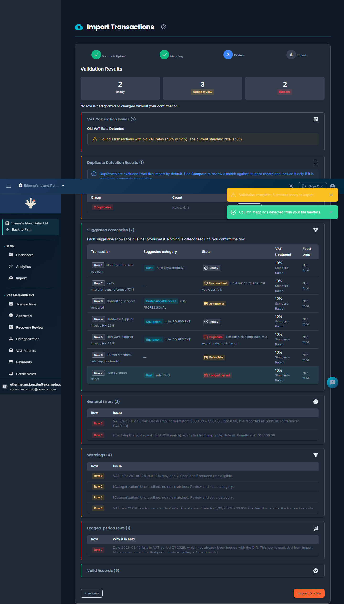
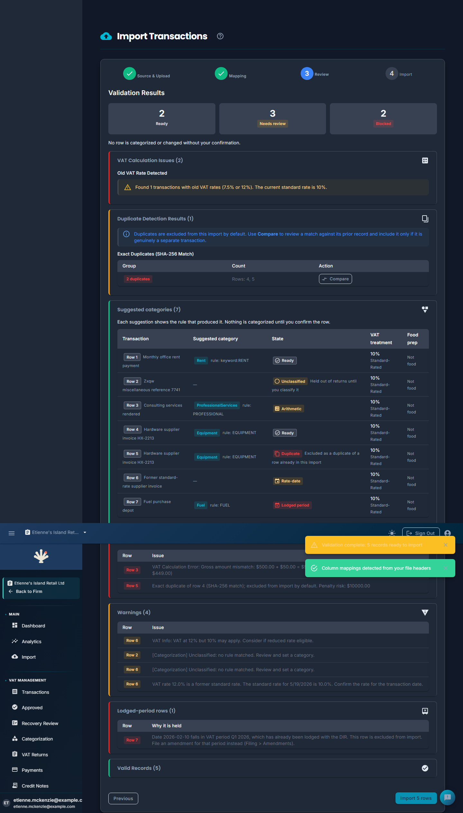
Slice D — Import receipt (#3976, ruled §6 defect)
The receipt now renders on every completed commit. D1 (clean): green "Import complete", four-count Imported 4 / Held 0 / Excluded 0 / Failed 0. D2 (partial): the all-states fixture excludes the duplicate + lodged rows → Imported 4 / Held 1 / Excluded 2 / Failed 0 with the filing-block continuity notice. (The Excluded=2 required a save-funnel fix — an exact-content duplicate with no invoice number is now excluded at commit, so the receipt matches what the Review promised.)
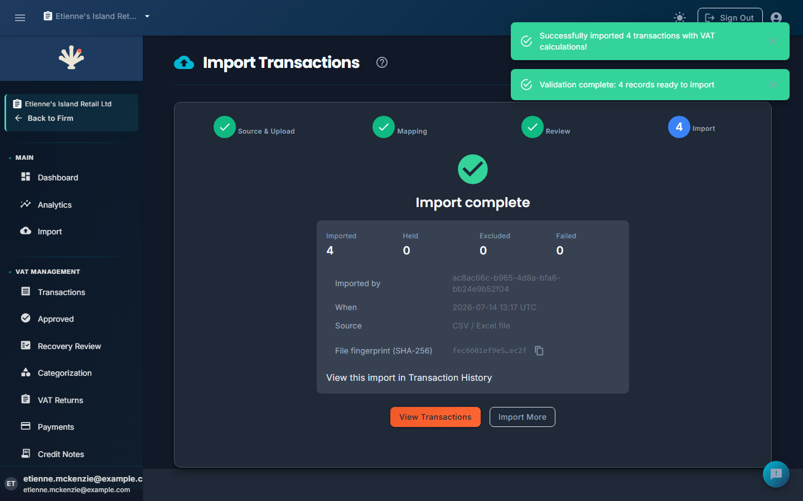
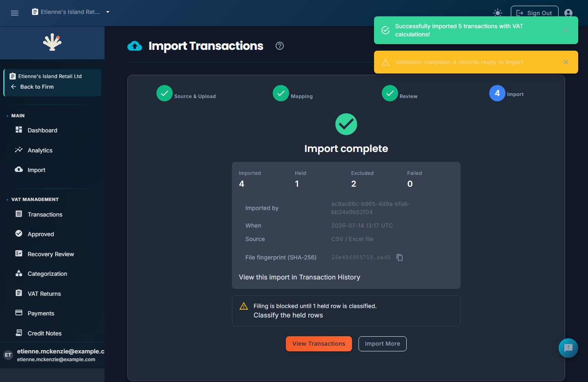
#4018 — ReefField background (motion 0/2/4s)
Timestamped stills so displacement can be measured against the parameter set: landing (atmosphere-full) + login (atmosphere-calm) at t=0s / 2s / 4s, plus the reduced-motion static composition.
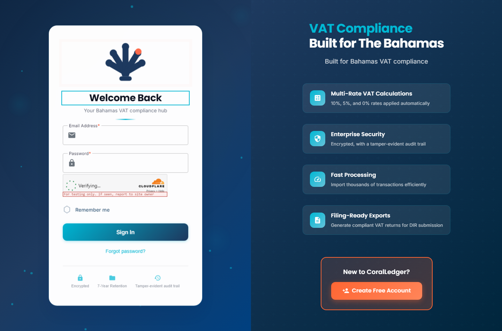
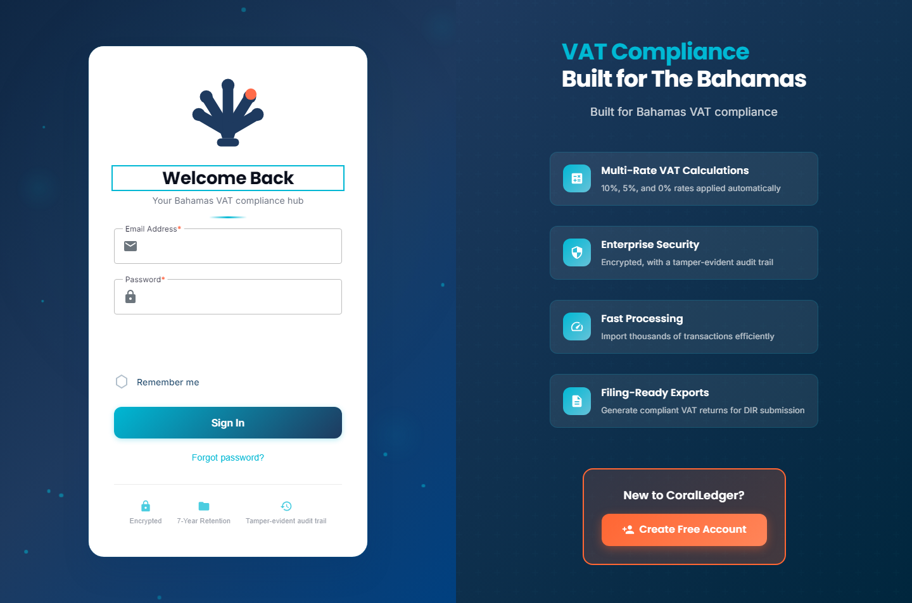
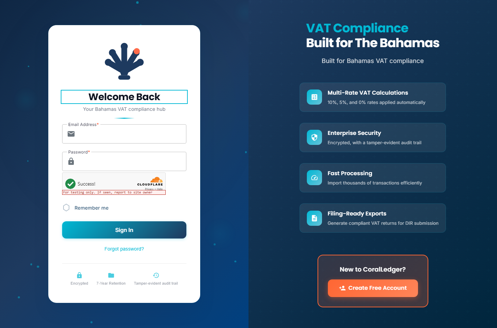
Provenance: every image is stamped with build 9966971a (in the filename and the per-slice _capture-manifest.tsv), captured against a Development app running that exact binary. Renders are build-determined, so these are valid evidence for the delta re-verify.